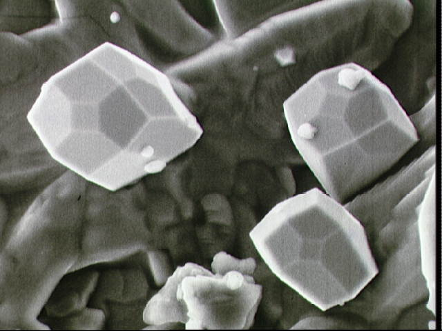

Projects Resources 2013/14
Getting started
Here is a very brief summary
(all details are in the Projects Handbook, and circulated information, linked below).
The first step in starting a project is to find a supervisor, and agree a subject area with that supervisor.
Have a look at the various lists of project outlines (presently separated into
so-called* Pure, Applied and Statistics projects) below.
Find a couple that sound interesting to you, and approach the relevant supervisors (indicated on the list).
When you finally agree a project with a supervisor, there is a form to fill in
(see below) and return to the Mathematics Taught Student Office.
*so-called, but the separation is by supervisor's Department, and not by
any scientific criterion (so look at all the lists!).
Links to useful resources
- Links to module catalogue entries:
- Projects lists
- - Pure Mathematics
HERE
(rough and provisional version for 2013/14)
- - Statistics HERE
- - Applied Mathematics
HERE
- Links to module leaders (and some project lists):
- Project Handbook
(previous: 2011/12); new version now available: 2012-13 - changes other than dates
are minor;
IF VLE LINK DOWN: the link to VLE is broken at the moment. For now, try
here.
- Unofficial Viva advice: There is no official practice session for project vivas, but some
candidates do find it useful to do a "dry-run" of their presentation.
The recommendation is for students to practice giving their presentation
to each other. If you would like to do this, MALL can be reserved for the
purpose. When this is announced (perhaps in early January),
just pair up with one (or more) other
candidates and come along and give your presentations to each other.
- Project student/supervisor agreement form HERE (draft).
- Circulated project allocation info HERE.
- Link to VLE
- Archived Projects list (2010/11) HERE
(NB, this is the OLD 2010/11 Pure list, for reference).
BACK